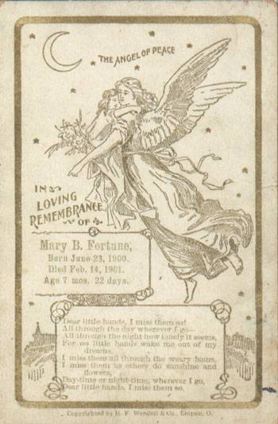

Mary Bell Fortune
1900 - 1901

Parents:
Richard Henry Fortune
1865 - 1901
Lucy Margaret Downey
1867 - 1920
Offspring:
NONE
References:
1. Bradley James Wogsland
2. Neal Wogsland's Genealogy files
Last modified on 25 April 2004 by
Bradley James Wogsland
.